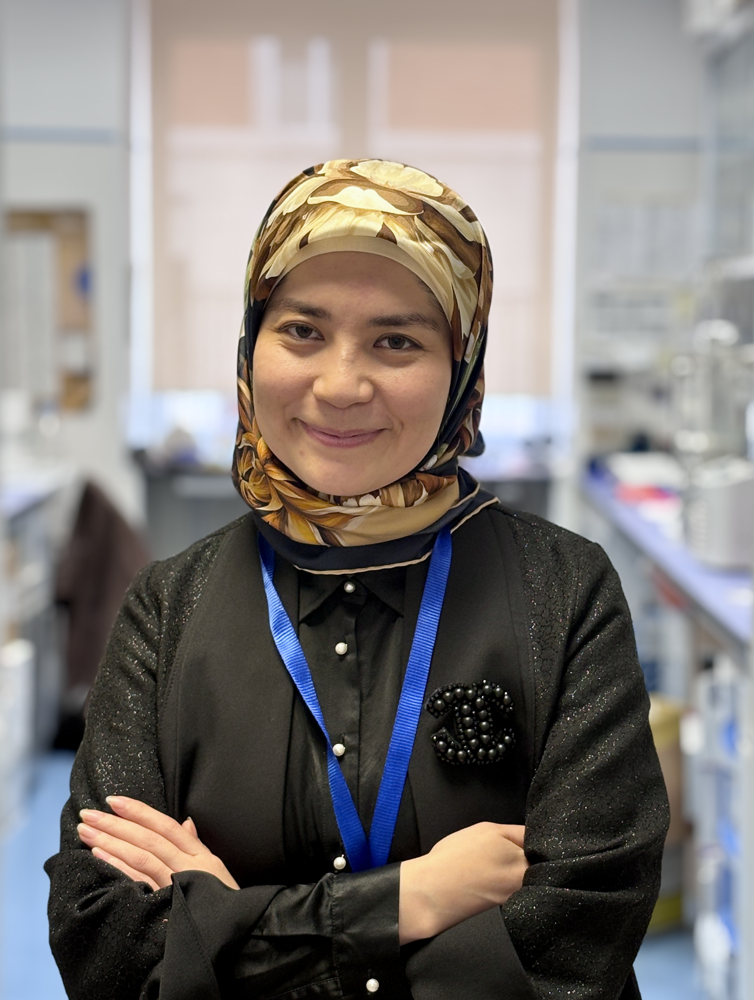

Zainab Nazari
Postdoctoral Researcher in Rita Levi-Montalcini European Brain Research Institute (EBRI).
Welcome
I am currently a postdoctoral researcher at the European Brain Research Institute EBRI in the Bioinformatics and Artificial Intelligence Facility, as well as visiting scientist at the Scuola Normale Superiore in Bio@SNS lab. My research focuses on RNA-seq (single-cell and bulk), clinical, and other omics data from neurodegenerative diseases aiming to improve diagnostics, prediction, and biological pathway discovery.
- I have completed Master in High Performance Computing program (MHPC) joint with ICTP and SISSA. The program provided a comprehensive training in parallel computing, HPC architecture, performance optimization, and scientific computing.
- I got my PhD in Theoretical High Energy Physics under supervision of Prof. Fernando Quevedo and Prof. Dieter Van den Bleeken, joint with Bogazici University and STEP program of International Center for Theoretical Physics (ICTP). I managed to work on three-dimensional massive supergravity solutions, integrable models via the gauge/Yang-Baxter equation correspondence and finally I simulated oscillons in the early universe using GRChombo, watching tiny localized energy lumps collapse into black holes.
- I am passionate about both art and science, and I bring them together through my paintings. To me, art is a powerful way to let scientific concepts dance across colours and shapes to express their beauty.
- I am also committed to making science accessible in the world’s least-developed communities.